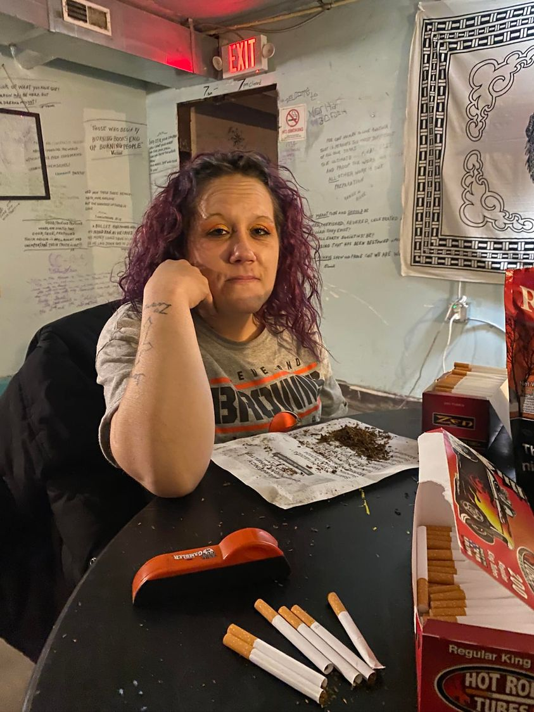

Mobile uploads
I want to try something today.
Today Kristyn is going to seriously try to go to rehab.
The problem is she is plagued with extreme anxiety. She is beyond nervous.
She is supposed to meet up with a woman this morning at 11am. But it’s going to be so hard for her to take that step. It’s so terrifying walking into the unknown.
So what I want to experiment with is the power of positive thoughts.
I’d love for all of us to send hopeful, loving, supportive thoughts to Kristyn this morning. Let’s hope that she can find the extreme courage to meet with that person and take the next step in her life.
Kristyn is so smart, so hardworking, and so ready for a new chapter in her life.
YOU GOT THIS KRISTYN!!!